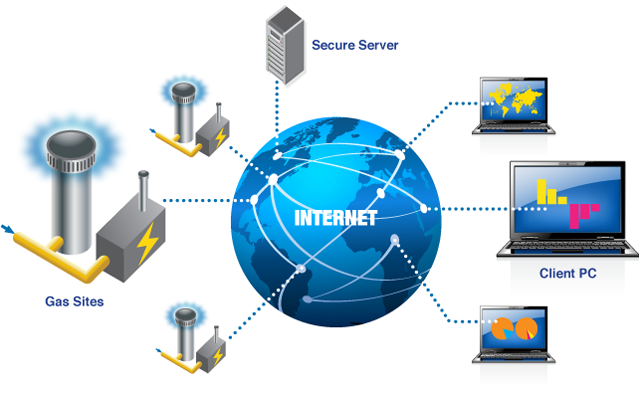

NETWORKING BASICS
Networking is the construction,design,and use of a network,including the physical (cabling ,hub,bridges,switches,router,and so forth),the selection and use of telecommunication protocol and computer software for using and managing the network ,and the establishment of operation policies and procedures related to the network.
learn more about basics>>
SWITCHES
A network switch (also called switching hub, bridging hub, officially MAC bridge) is a computer networking device that connects devices together on a computer network by using packet switching to receive, process, and forward data to the destination device.
learn more about switches>>
ROUTERS
A router is a networking device that forwards data packets between computer networks. Routers perform the traffic directing functions on the Internet. A data packet is typically forwarded from one router to another router through the networks that constitute an internetwork until it reaches its destination node.
learn more about routers>>
HUBS
In a hub, a frame is passed along or "broadcast" to every one of its ports. It doesn't matter that the frame is only destined for one port. The hub has no way of distinguishing which port a frame should be sent to. Passing it along to every port ensures that it will reach its intended destination. This places a lot of traffic on the network and can lead to poor network response times.
Compared to a standard switch, the hub is slower as it can send or receive information just not at the same time, but typically costs more than a hub.
learn more about hubs>>
BRIDGES
Network bridge is a computer networking device that creates a single aggregate network from multiple communication networks or network segments. This function is called network bridging. Bridging is distinct from routing. Routing allows multiple networks to communicate independently and yet remain separate, whereas bridging connects two separate networks as if they were a single network (hence the name "bridging").
In the OSI model, bridging is performed in the first two layers, below the network layer (layer 3). If one or more segments of the bridged network are wireless, the device is known as a wireless bridge and the function as wireless bridging.
learn more about bridges>>
MODEM
A modem (modulator–demodulator) is a network hardware device that modulates one or more carrier wave signals to encode digital information for transmission and demodulates signals to decode the transmitted information. The goal is to produce a signal that can be transmitted easily and decoded to reproduce the original digital data. Modems can be used with any means of transmitting analog signals, from light-emitting diodes to radio.
A common type of modem is one that turns the digital data of a computer into modulated electrical signal for transmission over telephone lines and demodulated by another modem at the receiver side to recover the digital data
learn more about modem>>

CERTIFICATION IN NETWORKING
souravsingh2626@gmail.com
indus hostel !!
room number 207......
contact..
8493073943
........................................................................................................................